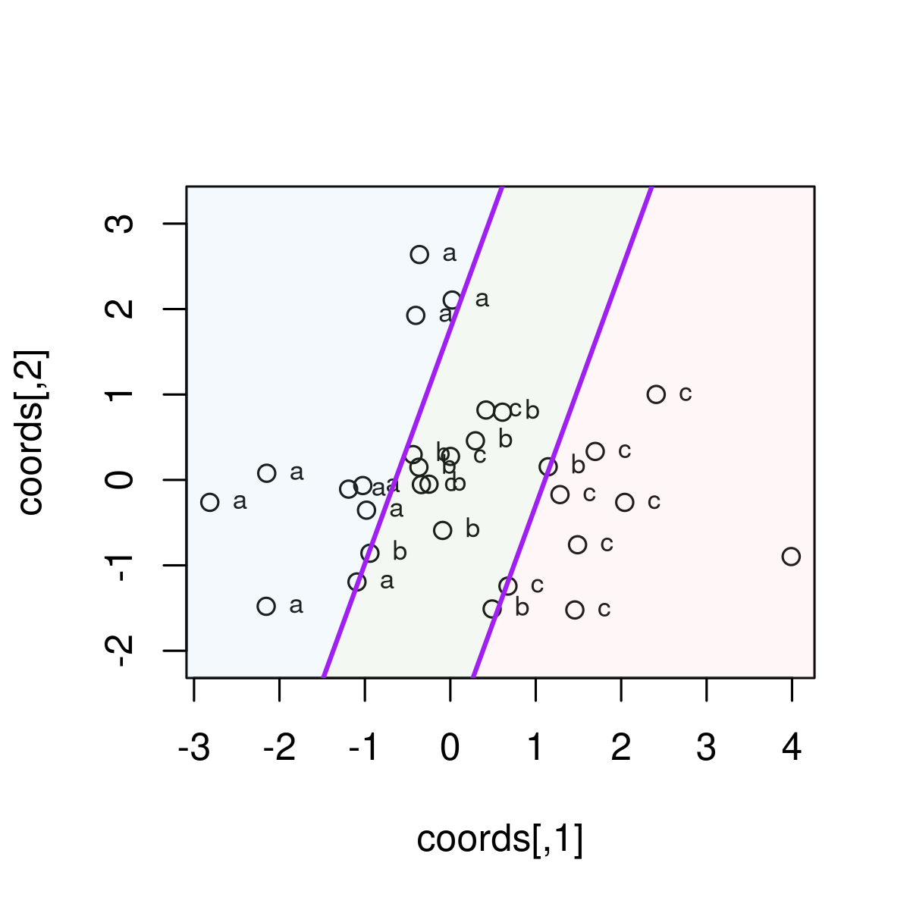
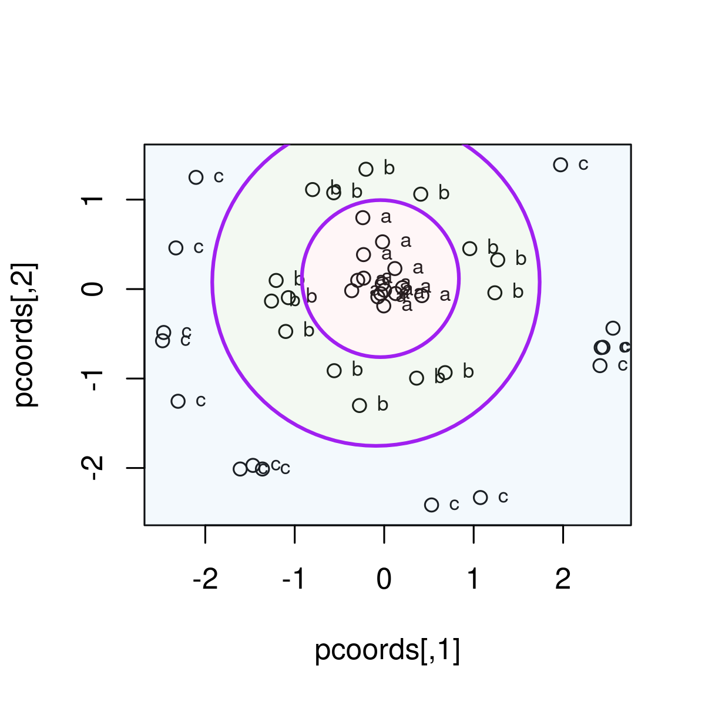
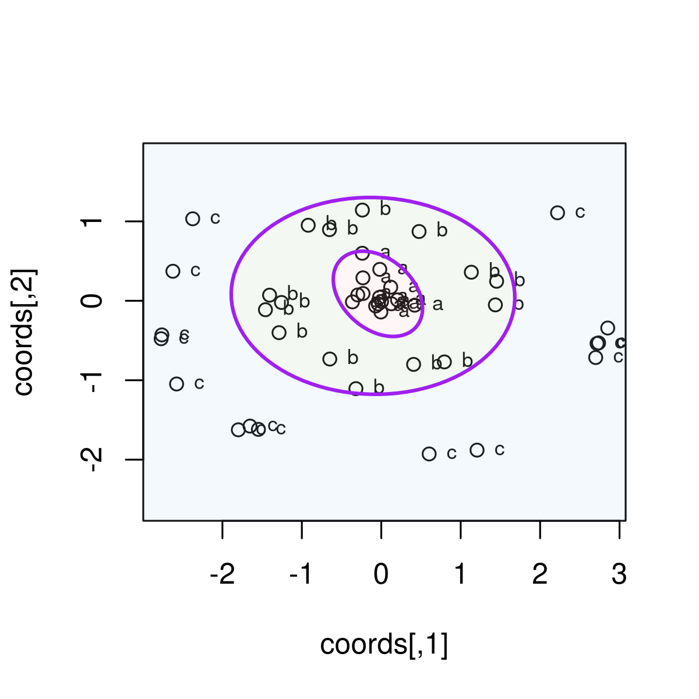
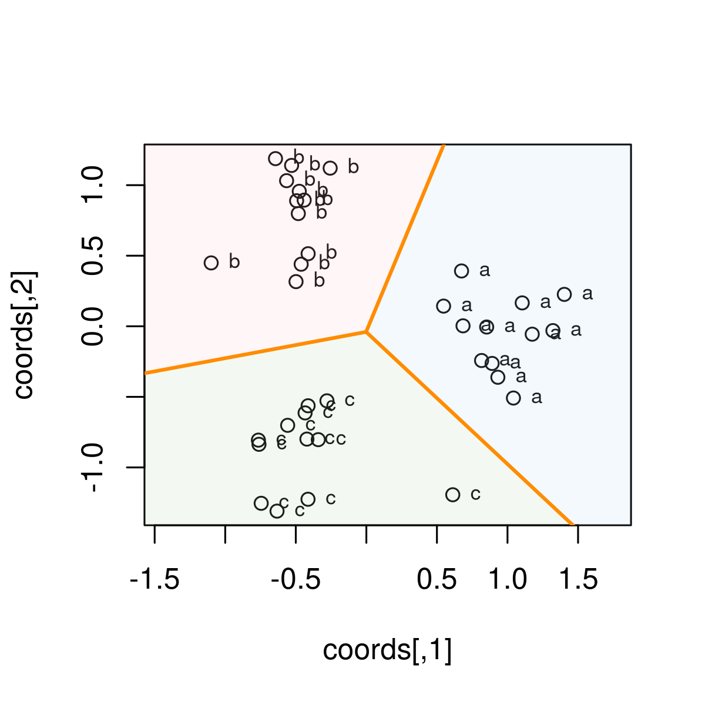
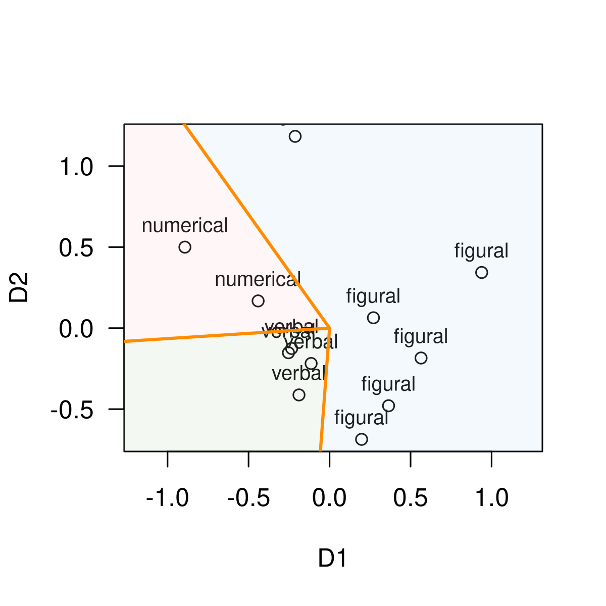
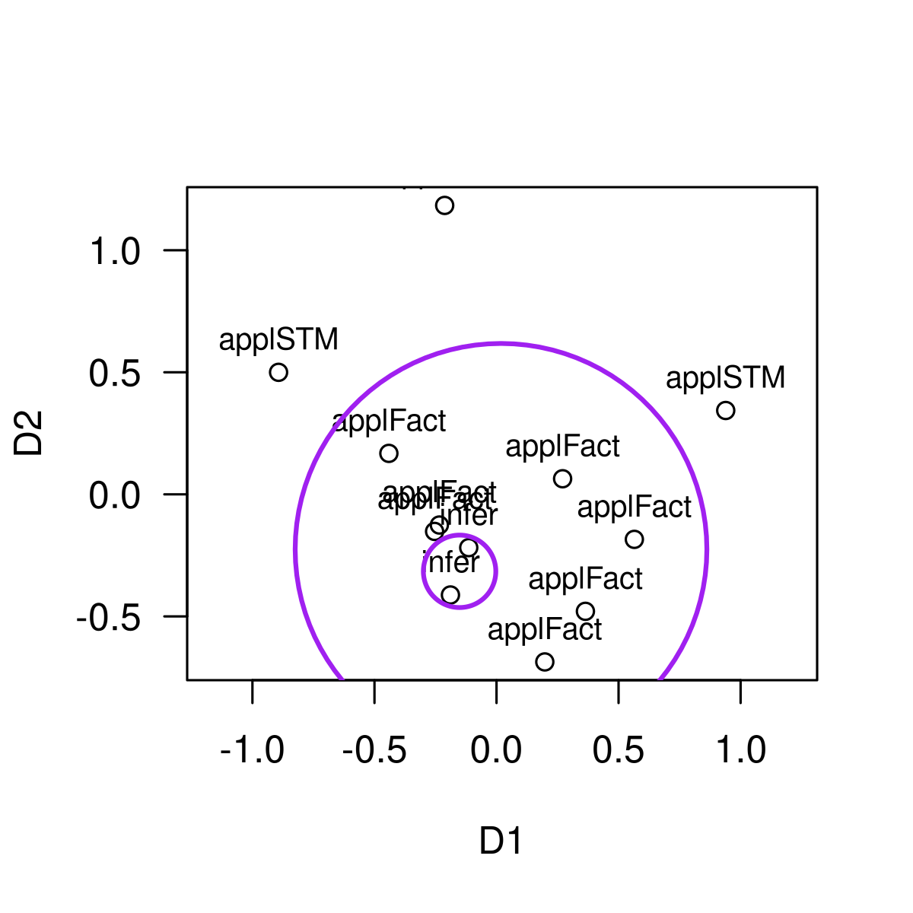
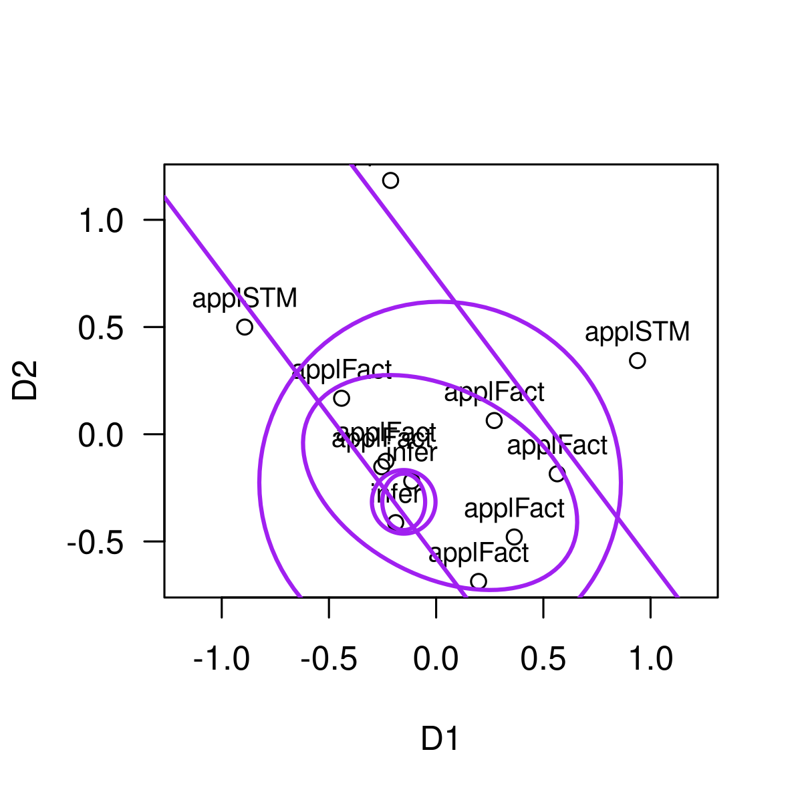
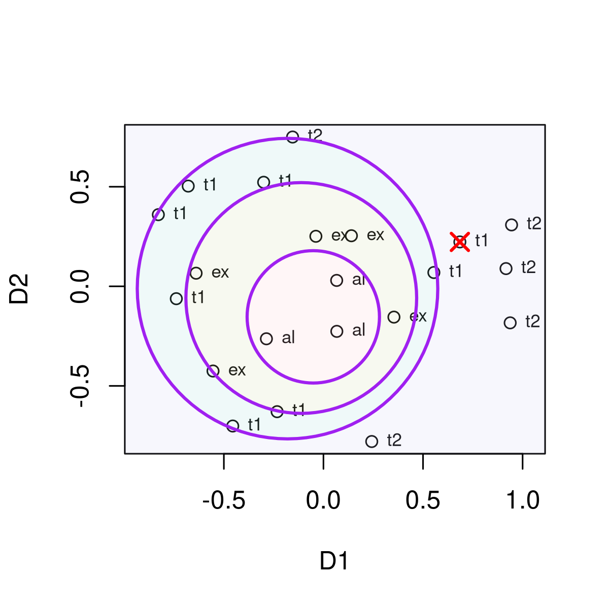

Facet Theory and Regional Partitions
FacetedPartitions.RmdFacets, Configurations, and Partitions
Facet Theory (FT) is a meta-approach to empirical research orignally proposed by Louis Guttman (1957, 1959, 1965) and since then developed by many others (Borg & Shye, 1995; Canter, 1985; Guttman & Greenbaum, 1998; Shye, 1998, 1999; Shye, Elizur & Hoffman, 1994). We strongly advise to acquire a basic understanding of FT before using this package, for example Shye (1998). An essential step in FT applications is Multidimensional Scaling (MDS) of similarities/distances; for introductions see Borg and Groenen (2005), and also refer to the vignettes of the smacof package, which should be installed when using facpart.
The current version of the package can be installed from github. We recommend to load the packages facpart and smacof in parallel.
# install.packages("remotes")
# remotes::install_github(repo = "https://github.com/rpfister57/facpart.git")
require(facpart)
#> Loading required package: facpart
#> Loading required package: plotrix
require(smacof)
#> Loading required package: smacof
#> Loading required package: colorspace
#> Loading required package: e1071
#>
#> Attaching package: 'smacof'
#> The following object is masked from 'package:base':
#>
#> transformAssume you are studying some domain (e. g., intelligence), and you measure a set of items from that domain, say intelligence test items. Based on your theory, each item can be classified according to the elements of a facet, which is a defining aspect of the domain under study. With respect to intelligence items, a typical facet is the modality (or symbol system) of the test item, with elements being verbal, numerical, and figural. Thus, each test item is mapped onto exactly one of these categories. The theory is assumed to be confirmed if these facet elements can be identified as geometrical patterns in an empirical space constructed from measurements of the items.
The canonical approach is to submit the correlations among the items to a multidimensional scaling procedure. As a result we obtain 2-dimensional (or higher dimensional) configurations of points (= items), with highly correlated items being close to each other, and items with small or negative correlations being farther apart. This configuration serves as the starting point to search for patterns according to the theoretical classification from the faceted definition. A simple pattern might be that all items belonging to a specific category (e. g., verbal items) are in close vicinity, but apart from items of a different category. If no such separation can be detected, the theory must be modified.
Methods such as factor analysis or cluster analysis have traditionally been used to find patterns in correlations. However, the patterns emphasized by FT are called regional partitions, and are difficult to detect by traditional methods, if at all.
Three types of partitions are commonly distinguished:
Axial partition: categories are separated by straight parallel lines (axes).
Radial partition: categories are separated by circles with different radii, emanating from a center.
Angular partition: categories are separated by lines with different angles from a common origin.
This will become clear from the examples below. The facpart package provides functions to search for best fitting partitions.
A Brief Overview
We briefly demonstrate the essential concepts using artificial data from the functions’ help pages.
Axial Partitions
Axial partitions represent regions separated by straight lines. The axialLines() function attempts to separate the facet groups using straight parallel lines. The help page provides a simple demonstration. Koordinates for 30 points are generated, and three facet elements are assigned to ten points, respectively.
set.seed(9876)
crd <- rbind(cbind(rnorm(10, -1), rnorm(10)),
cbind(rnorm(10, 0), rnorm(10)),
cbind(rnorm(10, 1), rnorm(10)))
grp <- factor(c(rep("a", 10), rep("b", 10), rep("c", 10)))
axialLines(crd, grp, fill = TRUE, add = FALSE)
#> $slope
#> [1] 2.747477
#>
#> $intercepts
#> [1] -3.045128 1.767640
#>
#> $angle
#> [1] 2.792527
#>
#> $margin
#> [1] 0.0137848
#>
#> $misclass
#> [1] 4
#>
#> $misclass_points
#> x y label
#> 1 3.990025564 -0.8970880 b
#> 2 0.417433005 0.8182769 c
#> 3 -0.338888791 -0.0549359 c
#> 4 0.002191396 0.2750843 c
#>
#> $sector
#> [1] 3 3 3 3 3 3 3 3 3 3 2 2 2 2 2 2 2 2 1 2 1 2 1 1 2 1 2 1 1 1
#>
#> $majority
#> [1] "c" "b" "a"The resulting plot shows, from left to right, the regions for the elements ‘a’, ‘b’, and ‘c’, each region separated by a straight line. The separation is not perfect, but as good as possible, that is, with a minimum of misclassification per region.
Radial Partitions
Radial partitions represent circular regions separated by circles or ellipses. Given a center point, the regions extend from that center, each additional outer region having a larger radius and including the previous inner region. The radialCircles() and the radialEllipses() functions search for such circular regions separating the facet elements.
set.seed(9876)
g1 <- cbind(rnorm(15, 0, 0.2), rnorm(15, 0, 0.2))
th2 <- runif(15, 0, 2 * pi)
g2 <- cbind(1.2 * cos(th2), 1.2 * sin(th2)) + matrix(rnorm(30, 0, 0.1), 15)
th3 <- runif(15, 0, 2 * pi)
g3 <- cbind(2.5 * cos(th3), 2.5 * sin(th3)) + matrix(rnorm(30, 0, 0.1), 15)
crd <- rbind(g1, g2, g3)
grp <- factor(c(rep("a", 15), rep("b", 15), rep("c", 15)))
radialCircles(crd, grp, fill = TRUE, add = FALSE)
#> $cx
#> [1] -0.04242828 -0.09219946
#>
#> $cy
#> [1] 0.11678559 0.07745636
#>
#> $radii
#> [1] 0.8775219 1.8299541
#>
#> $misclass
#> [1] 0
#>
#> $misclass_points
#> [1] x y label
#> <0 rows> (or 0-length row.names)
#>
#> $sector
#> [1] 1 1 1 1 1 1 1 1 1 1 1 1 1 1 1 2 2 2 2 2 2 2 2 2 2 2 2 2 2 2 3 3 3 3 3 3 3 3
#> [39] 3 3 3 3 3 3 3
#>
#> $majority
#> [1] "a" "b" "c"A three-element facet is generated, with elements ‘a’, ‘b’, and ‘c’. The plot shows the radial partions, that is, an inner regions containing points ‘a’, a region with points ‘b’ enclosing the inner ‘a’-region, and a peripheral region with points ‘c’.
In an analogous way, the radialElllipses() functions searches for best fitting ellipses, generating a nested partitioning of ellipsoid functions.
set.seed(9876)
g1 <- cbind(rnorm(15, 0, 0.2), rnorm(15, 0, 0.15))
th2 <- runif(15, 0, 2 * pi)
g2 <- cbind(1.4 * cos(th2), 1.0 * sin(th2)) + matrix(rnorm(30, 0, 0.1), 15)
th3 <- runif(15, 0, 2 * pi)
g3 <- cbind(2.8 * cos(th3), 2.0 * sin(th3)) + matrix(rnorm(30, 0, 0.1), 15)
crd <- rbind(g1, g2, g3)
grp <- factor(c(rep("a", 15), rep("b", 15), rep("c", 15)))
radialEllipses(crd, grp, fill = TRUE, add = FALSE)
#> $cx
#> [1] -0.04242828 -0.10404963
#>
#> $cy
#> [1] 0.08758920 0.06189351
#>
#> $a
#> [1] 0.6364627 1.7861115
#>
#> $b
#> [1] 0.4456963 1.2389542
#>
#> $angle
#> [1] 2.423333 3.118879
#>
#> $misclass
#> $misclass$n
#> [1] 0
#>
#> $misclass$indices
#> integer(0)
#>
#>
#> $misclass_points
#> [1] x y label
#> <0 rows> (or 0-length row.names)
#>
#> $sector
#> [1] 1 1 1 1 1 1 1 1 1 1 1 1 1 1 1 2 2 2 2 2 2 2 2 2 2 2 2 2 2 2 3 3 3 3 3 3 3 3
#> [39] 3 3 3 3 3 3 3
#>
#> $majority
#> [1] "a" "b" "c"Generally, for radial partition functions, the separating circles or ellipses need not have a common center, but are constrained to be nested, that is, each outer region will include the interior regions.
Angular Partitions
Angular partitions represent wedge-like regions, originating from a common center; the regions will look similar to triangular pieces from a round piece of cake or pizza. The angularPartition() function searches for such regions, generating lines with different angles emanating from a common origin.
set.seed(9876)
theta <- rep(c(0, 2 * pi / 3, 4 * pi / 3), each = 12) + rnorm(36, 0, 0.25)
r <- runif(36, 0.5, 1.5)
crd <- cbind(r * cos(theta), r * sin(theta))
grp <- factor(rep(c("a", "b", "c"), each = 12))
angularPartition(crd, grp, add = FALSE, fill = TRUE)
#> $cuts
#> [1] -0.7517708 1.1775085 -2.9571945
#>
#> $margin
#> [1] 0.3707055
#>
#> $misclass
#> [1] 0
#>
#> $misclass_points
#> [1] x y label
#> <0 rows> (or 0-length row.names)
#>
#> $sector
#> [1] 3 3 3 3 3 3 3 3 3 3 3 3 1 1 1 1 1 1 1 1 1 1 1 1 2 2 2 2 2 2 2 2 2 2 2 2
#>
#> $majority
#> [1] "b" "c" "a"
#>
#> $center
#> [1] -0.001846992 -0.039872202
#>
#> $pt_angles
#> [1] 0.32149865 -0.24286594 -0.01371260 0.00695637 0.06268145 -0.24513717
#> [7] 0.18369496 -0.42183313 0.18711272 0.04052829 0.56823932 -0.33152769
#> [13] 2.05257795 1.78677774 1.99153876 2.09094730 2.51915703 2.01009170
#> [19] 2.72260523 2.05795544 2.20873940 2.33541115 2.05475273 2.01442570
#> [25] -2.35380896 -2.21628526 -1.98863070 -2.03203318 -1.08170854 -2.23652965
#> [31] -1.90492012 -2.07545851 -2.26925484 -2.12004313 -2.33215861 -2.08743358The plot shows how the three facet elements ‘a’, ‘b’, and ‘c’ are separated by straight lines with a common origin in a wedge-like pattern.
The Basic Workflow
As an example we take the intelligence study by Guttman and Levy (1991). The correlation matrix of 12 intelligence test items and the assignment to three facets (Material, Modality, Rule) is provided in the gutt91 data object (modified and extended Guttman1991 data from the smacof package). The 12 test items are actually 12 subtests from the WISC-R, and the sample are 2200 U.S. children aged 6.5 to 16.5 years (see Guttman & Levy, 1991).
The gutt91 data contain a lot of further information, but for the moment we just extract the correlation matrix and the dataframe with facet definitions.
data(gutt91)
Kor <- gutt91$gutt91_cor
Facets <- gutt91$gutt91_df
Facets
#> items Material Modality Rule X1
#> Information Information Oral verbal applFact -0.2536557
#> Similarities Similarities Oral verbal infer -0.1137925
#> Arithmetic Arithmetic Oral numerical applFact -0.4410249
#> Vocabulary Vocabulary Oral verbal applFact -0.2341282
#> Comprehension Comprehension Oral verbal infer -0.1887449
#> DigitSpan DigitSpan Oral numerical applSTM -0.8928474
#> PictureCompletion PictureCompletion Oral figural applFact 0.1978224
#> PictureArrangement PictureArrangement Manual figural applFact 0.3642192
#> BlockDesign BlockDesign Manual figural applFact 0.2707838
#> ObjectAssembly ObjectAssembly Manual figural applFact 0.5647150
#> Coding Coding Paper figural applSTM -0.2123476
#> Mazes Mazes Paper figural applSTM 0.9390008
#> X2 D1 D2 D3
#> Information -0.15190509 -0.2607345 -0.14330818 0.022241000
#> Similarities -0.21840762 -0.1254660 -0.27272665 0.035737532
#> Arithmetic 0.16780236 -0.4232661 0.10074101 0.310579184
#> Vocabulary -0.12571647 -0.2623318 -0.13834063 -0.012430979
#> Comprehension -0.41232278 -0.2455010 -0.32650735 -0.184040673
#> DigitSpan 0.49987343 -0.7355785 0.63826052 0.363434120
#> PictureCompletion -0.68657756 0.3135845 -0.53410786 0.248713125
#> PictureArrangement -0.47923328 0.2842056 -0.23684569 -0.567151304
#> BlockDesign 0.06385235 0.2830315 -0.04178309 0.083479149
#> ObjectAssembly -0.18450416 0.6240344 -0.29125210 0.009257765
#> Coding 1.18363379 -0.2406658 0.82913448 -0.701789299
#> Mazes 0.34350503 0.7886878 0.41673555 0.391970379
Kor
#> Information Similarities Arithmetic Vocabulary Comprehension
#> Information 1.00 0.62 0.54 0.55 0.42
#> Similarities 0.62 1.00 0.69 0.36 0.48
#> Arithmetic 0.54 0.47 1.00 0.40 0.40
#> Vocabulary 0.69 0.67 0.52 1.00 0.28
#> Comprehension 0.55 0.59 0.44 0.66 1.00
#> DigitSpan 0.36 0.34 0.45 0.38 0.26
#> PictureCompletion 0.40 0.46 0.34 0.43 0.41
#> PictureArrangement 0.42 0.41 0.30 0.44 0.40
#> BlockDesign 0.48 0.50 0.46 0.48 0.44
#> ObjectAssembly 0.40 0.41 0.29 0.39 0.37
#> Coding 0.28 0.28 0.32 0.32 0.26
#> Mazes 0.27 0.28 0.27 0.27 0.29
#> DigitSpan PictureCompletion PictureArrangement BlockDesign
#> Information 0.27 0.46 0.52 0.32
#> Similarities 0.47 0.41 0.44 0.27
#> Arithmetic 0.67 0.50 0.45 0.66
#> Vocabulary 0.59 0.41 0.34 0.38
#> Comprehension 0.34 0.28 0.30 0.43
#> DigitSpan 1.00 0.28 0.46 0.44
#> PictureCompletion 0.21 1.00 0.29 0.48
#> PictureArrangement 0.22 0.40 1.00 0.39
#> BlockDesign 0.31 0.52 0.46 1.00
#> ObjectAssembly 0.21 0.48 0.42 0.60
#> Coding 0.29 0.19 0.25 0.33
#> Mazes 0.22 0.34 0.32 0.44
#> ObjectAssembly Coding Mazes
#> Information 0.32 0.21 0.34
#> Similarities 0.27 0.22 0.46
#> Arithmetic 0.26 0.31 0.42
#> Vocabulary 0.41 0.21 0.25
#> Comprehension 0.40 0.29 0.32
#> DigitSpan 0.44 0.22 0.60
#> PictureCompletion 0.37 0.40 0.33
#> PictureArrangement 0.26 0.52 0.44
#> BlockDesign 0.29 0.48 0.24
#> ObjectAssembly 1.00 0.19 0.37
#> Coding 0.24 1.00 0.21
#> Mazes 0.37 0.21 1.00The items in the Facets dataframe are named according to the labels in Guttman and Levy (1991). We see that the first facet Material assigns to each item the materiality of the task the item represents (Guttman and Levy, 1991, call this Mode of Expression): It can be ‘oral’ if it is just based on oral communication, or ‘manual’ if the participant has to actually manipulate something with his or her hands, or ‘paper’ if the item requires to use paper and pencil to write something. The second facet Modality defines the symbol system involved (Guttman and Levy, 1991, call this Format of Communication): ‘verbal’ refers to text in natural language, ‘numerical’ refers to numbers and mathematical notation, and ‘figural’ refers to drawings, geometric shapes, or pictorial representations. The third facet Rule (called Rule Task by Guttman and Levy) defines the core of what an intelligence item is: it asks about an objective rule, and the answer can be correct or false. Either the required rule has to be inferred by the testee (‘infer’), or a factual rule hast to be applied (‘applFact’), or what just has been learned and is stored in short term memory (‘applSTM’). For details about the theoretical rationale refer to Guttman and Levy (1991).
Theoretically, we expect that these distinctions show up in specific patterns or regional partitions of a geometrical representation of the items. Thus, we perform a multidimensional scaling analysis of the correlation matrix. Since MDS takes distances as input data, we have to convert the correlation matrix (which are similarities) to distances. The conversion of correlations to distances follows the equation
The distances are then submitted to MDS. For converting and for MDS we use functions from the smacof package.
Kor_D <- smacof::sim2diss(Kor, method = "corr", to.dist = TRUE)
gutt91_mds <- smacof::mds(Kor_D, type = "ordinal")
gutt91_mds
#>
#> Call:
#> smacof::mds(delta = Kor_D, type = "ordinal")
#>
#> Model: Symmetric SMACOF
#> Number of objects: 12
#> Stress-1 value: 0.102
#> Number of iterations: 67The Stress-1 value of the resulting 2-dimensional configuration is
0.102 which is usually considered a good fit (note that
currently facpart only works with 2-dimensional
configurations). To plot the fit we can simply take the output object
gutt91_mds as argument for the plot function. However, usually
another approach is preferable which gives more control; in particular,
we want the facet elements as labels, not the item names. Thus, we first
plot only the coordinates of the 12 items, which are in
gutt91_mds$conf. Then we add the facet labels for
Modality with the text() function; the labels are
in the Facets data frame. The resulting plot now nicely shows the
configuration of the three categories for modality, and we can check if
a regular pattern can be identified.
plot(gutt91_mds)
plot(gutt91_mds$conf,
asp = 1, las = 1)
text(gutt91_mds$conf, labels = Facets$Modality,
cex = 0.8, pos = 2)
abline(v=0, lty = 2); abline(h=0, lty = 2)Let’s assume that our theory predicts that the Modality facet can be
partitioned according to an angular partition, that is, from a
common origin lines or rays of different angles divide the space into
wedge-like regions. The angularPartition() function does
exactly this: It searches for a best fitting angular partition, so that
each region contains only items of one specific facet element. If that
is not perfectly possible, it minimizes the number of misclassified
items and yields the best possible partitioning. The necessary arguments
are the point coordinates (crd =), and the facet assignments for each
point (group =). The coordinates must be a numeric matrix or data frame
with two numeric columns, and the facet labels should be a factor with
levels corresponding to the facet labels.
plot(gutt91_mds$conf,
asp = 1, las = 1)
text(gutt91_mds$conf, labels = Facets$Modality,
cex = 0.8, pos = 3)
gutt91_mod_ang <- angularPartition(crd = gutt91_mds$conf,
group = Facets$Modality,
add = TRUE, fill = TRUE)
The partition lines are drawn into the existing plot, emerging from a center at (0,0), and separating the configuration into three regions: an upper wedge containing the two Paper items, a lower right wedge containing the three Manual items, and a left wedge containing the Oral items. No misclassified items are observed.
plot(gutt91_mds$conf,
asp = 1, las = 1)
text(gutt91_mds$conf, labels = Facets$Rule,
cex = 0.8, pos = 3)
gutt91Rule <- radialCircles(crd = gutt91_mds$conf,
group = Facets$Rule, add = TRUE)
highlightMisclass(gutt91Rule)Just for demonstration purposes, we add the partions obtained by the other major functions (axial, circles, ellipses):
plot(gutt91_mds$conf,
asp = 1, las = 1)
text(gutt91_mds$conf, labels = Facets$Rule,
cex = 0.8, pos = 3)
axialLines(crd = gutt91_mds$conf,
group = Facets$Rule)
#> $slope
#> [1] -1.327045
#>
#> $intercepts
#> [1] -0.5756567 0.7333685
#>
#> $angle
#> [1] 0.6457718
#>
#> $margin
#> [1] 0.05244161
#>
#> $misclass
#> [1] 2
#>
#> $misclass_points
#> x y label
#> Similarities -0.1137925 -0.2184076 infer
#> DigitSpan -0.8928474 0.4998734 applSTM
#>
#> $sector
#> [1] 2 2 2 2 1 1 2 2 2 2 3 3
#>
#> $majority
#> [1] "infer" "applFact" "applSTM"
radialCircles(crd = gutt91_mds$conf,
group = Facets$Rule)
#> $cx
#> [1] -0.15126870 0.01846602
#>
#> $cy
#> [1] -0.3153652 -0.2252236
#>
#> $radii
#> [1] 0.1484136 0.8433509
#>
#> $misclass
#> [1] 0
#>
#> $misclass_points
#> [1] x y label
#> <0 rows> (or 0-length row.names)
#>
#> $sector
#> [1] 2 1 2 2 1 3 2 2 2 2 3 3
#>
#> $majority
#> [1] "infer" "applFact" "applSTM"
radialEllipses(crd = gutt91_mds$conf,
group = Facets$Rule)
#> $cx
#> [1] -0.15126870 0.01846602
#>
#> $cy
#> [1] -0.3153652 -0.2252236
#>
#> $a
#> [1] 0.10000 0.68604
#>
#> $b
#> [1] 0.1315365 0.4351220
#>
#> $angle
#> [1] 0.000000 2.653376
#>
#> $misclass
#> $misclass$n
#> [1] 0
#>
#> $misclass$indices
#> integer(0)
#>
#>
#> $misclass_points
#> [1] x y label
#> <0 rows> (or 0-length row.names)
#>
#> $sector
#> [1] 2 1 2 2 1 3 2 2 2 2 3 3
#>
#> $majority
#> [1] "infer" "applFact" "applSTM"To summarize, the basic workflow is:
Construct a distance matrix D of a set of n items, typically from a correlation matrix K. If necessary, convert K to D with
smacof::sim2diss().Assign facet labels: Assign to each of n items exactly one of k (k < n) labels corresponding to their facet elements. Store the assignment as a factor F with length = n (same item order as in D).
Apply non-metric multidimensional scaling to D, such as
smacof::mds(D, ndim = 2, type = "ordinal"). Check for fit and store the result object, for example as out_mds.Plot the point configuration, for example
plot(out_mds).Apply one of the
partition functions; necessary arguments arecrd(the point coordinates) andgroup(the facet assignments).Check the resulting plot. Check for regional fit and misclassifications.
More details will be provided in the following discussions of the major partition functions.
Axial Partitions
An axial partition partitions the configuration into stripes separated by parallel lines. For example, two parallel lines divide the configuration into three stripes or bands, inducing an order along a dimension (a simplex). If each stripe contains exactly one type of facet element, we will have a perfect separation of facet elements. If we have two facets, and each facet yields an axial partition (with approximately orthogonal dimensions), the resulting pattern is called a duplex.
In the simple case of only two facet elements, a single line suffices to separate the two elements. This is basically equivalent to linear discriminant analysis, with the point coordinates serving as the independent and the facet elements as the dependent grouping variable. The partitioning line will then be orthogonal to the discriminant function.
As an example, we use a study about student emotions in learning contexts.
Radial Partitions
A radial partition creates quasi-circular regions, emanating from a central region of the configuration. Thus, the partitioning regions are a function of the radius from the center. In the simple case of two facet elements a1 and a2, items of element a1 might be located around the center of the configuration, and elements a2 located in the periphery, separable by a circular line. With more than two elements, the regions will form circular-like strips with increasing distance from the center.
I the most general case, the circular-like regions can be separated by any kind of closed line, such as an ellipse, an oval, or some irregular closed curve. The facpart package provides two approaches: (i) find best fitting circles, (ii) find best fitting ellipses. Neither circles nor ellipses are expected to be strictly concentric (identical origin), but we impose the restriction that they be nested.
Circular Partitions
To demonstrate, we use data from the smacof package representing intelligence tests (Guttman, 1965) classified with respect to the type of cognitive operation required: analytical, complex, achievement (1 and 2), are the four facet elements. The data provided in the facpart package are guttman65mds, containing a data frame with 21 rows (test items), the coordinates D1 and D2 from a 2-dimensional MDS, and the facet labels (gfacets). For plotting we extract a two-character vector gf representing the facet elements.
data(guttman65mds)
str(guttman65mds)
#> 'data.frame': 21 obs. of 3 variables:
#> $ gfacets: Factor w/ 4 levels "analytical","complex",..: 1 1 1 2 2 2 2 2 3 3 ...
#> $ D1 : num 0.0671 0.0664 -0.2864 0.3539 0.1403 ...
#> $ D2 : num -0.2262 0.0296 -0.2634 -0.1546 0.254 ...
gf_nc <- nchar(as.character(guttman65mds$gfacets))
gf <- substr(guttman65mds$gfacets, gf_nc - 1, gf_nc)
plot(guttman65mds[ , 2:3],
pch = 19,
xlim = c(-1.5, 1.5), ylim = c(-1, 1),
asp = 1)
text(guttman65mds[ , 2:3], labels = gf,
cex = 0.8, pos = 3)
abline(h = 0)
abline(v = 0)According to theory, the analytical tests are expected to locate the
center of the configuration, the complex test a region around the
center, and the achievement test should be located at the periphery;
thus, a gradient of cognitive ability would emerge going outwards from
the center. In facet theoretical terms, the facet is assumed to play a
radial role. We apply the functionradialCircles() to find
the best partitions in terms of circles enclosig the central region.
circlesGutt65_out <- radialCircles(
crd = guttman65mds[ , 2:3],
group = gf,
fill = TRUE, add = FALSE)
highlightMisclass(circlesGutt65_out)
Exactly one point is misclassified, and we can highlight misclassified points with the highlightMisclass() function.
References
Borg, I., & Shye, S. (1995). Facet theory: Form and content. Sage.
Canter, D. (Ed.). (1985). Facet theory: Approaches to social research. Springer.
Guttman, L. (1957). Empirical Verification of the Radex Structure of Mental Abilities and Personality Traits. Educational and Psychological Measurement, 17, 391–407.
Guttman, L. (1959). Introduction to Facet Design and Analysis. In Proceedings of the Fifteenth International Congress of Psychology, 130–132.
Guttman, L. (1965). A Faceted Definition of Intelligence. In R. Eifermann (Ed.), Studies in Psychology.
Guttman, L., & Levy, S. (1991). Two structural laws for intelligence tests. Intelligence, 15(1), 79–103. https://doi.org/10.1016/0160-2896(91)90023-7
Guttman, R., & Greenbaum, C. W. (1998). Facet theory: Its development and current status. European Psychologist, 3(1), 13–36. https://doi.org/10.1027/1016-9040.3.1.13
Shye, S. (1998). Modern facet theory: Content design and measurement in behavioral research. European Journal of Psychological Assessment, 14(2), 160–171.
Shye, S. (1999). Facet theory. In A. E. Kazdin (Ed.), Encyclopedia of statistical sciences: Update (Vol. 3, pp. 231–239). Wiley
Shye, S., Elizur, D., & Hoffman, M. (1994). Introduction to facet theory: Content, theory, and application. Sage.